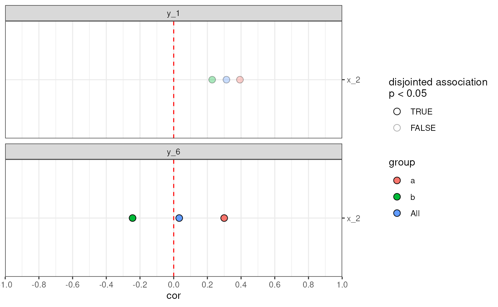
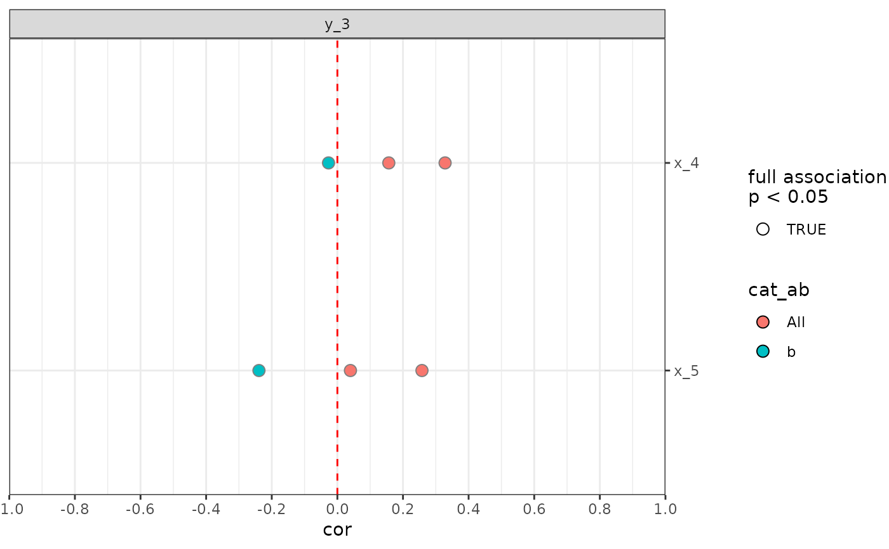
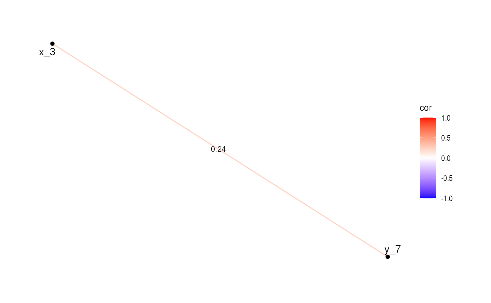
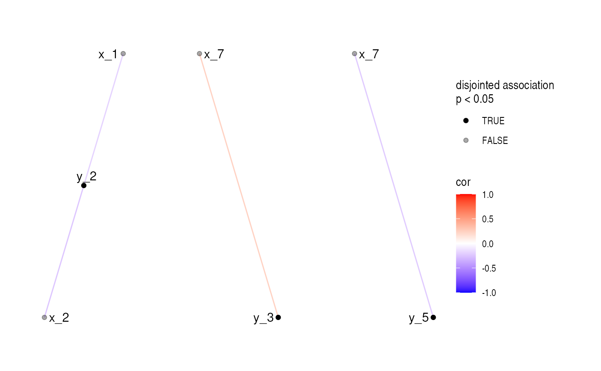

plotAnansi generates an association plot from the output of
anansi() in the table format. It provides a convenient way to
visually assess relevant results from the anansi analysis, either in the
form of a dotplot or a graph.
Arguments
- x
a
data.frameobject output ofanansi()in the table format.- ...
additional parameters
- layout
Character scalar. Specifies the plot layout to generate. It must be one ofc("dotplot, graph). (Default:dotplot)- association.type
Character scalar. Specifies the type of association to show in the plot. One of"disjointed","emergent"and"full". (Default:NULL)- model.var
Character scalar. Specifies the name of a variable in the anansi model. It is relevant only whenassociation.typeis"disjointed"or"emergent". (Default:NULL)- group
Character scalar. Selects one of the groups included in the anansi model. It is relevant only whenlayoutisgraph. (Default:All)- signif.threshold
Numeric scalar. Specifies the threshold to mark the significance ofassociation.type. (Default:NULL)- colour_by
Character scalar. Specifies one of thegroupsterms used in the originalanansicall,xby which points should be coloured. (Default:NULL)- color_by
Character scalar. Alias tocolour_by.- fill_by
Character scalar. Specifies one of thegroupsterms used in the originalanansicall,xby which points should be filled (Default:"group")- size_by
Character scalar. Specifies one of thegroupsterms used in the originalanansicall,xby which points should be sized. (Default:NULL)- shape_by
Character scalar. Specifies one of thegroupsterms used in the originalanansicall,xby which points should be shaped. (Default:NULL)- x_lab
Character scalar. Specifies the label of the x axis. (Default:"cor")- y_lab
Character scalar. Specifies the label of the y axis. (Default:"")- y_position
Character scalar. Specifies the position of the y labels. It should be either"left"or"right". (Default:"right")- show.cor
Logical scalar. Whether correlation edges should be labelled with correlation coefficients whenlayoutisgraph. (Default:FALSE)
Details
plotAnansi provides a standardised method to visualise the results
of anansi by means of a differential association plot. The input for this
function should be generated from anansi() or
anansi(), with return.format = "table"
Examples
# Import libraries
library(mia)
#> Loading required package: MultiAssayExperiment
#> Loading required package: SummarizedExperiment
#> Loading required package: MatrixGenerics
#> Loading required package: matrixStats
#>
#> Attaching package: ‘MatrixGenerics’
#> The following objects are masked from ‘package:matrixStats’:
#>
#> colAlls, colAnyNAs, colAnys, colAvgsPerRowSet, colCollapse,
#> colCounts, colCummaxs, colCummins, colCumprods, colCumsums,
#> colDiffs, colIQRDiffs, colIQRs, colLogSumExps, colMadDiffs,
#> colMads, colMaxs, colMeans2, colMedians, colMins, colOrderStats,
#> colProds, colQuantiles, colRanges, colRanks, colSdDiffs, colSds,
#> colSums2, colTabulates, colVarDiffs, colVars, colWeightedMads,
#> colWeightedMeans, colWeightedMedians, colWeightedSds,
#> colWeightedVars, rowAlls, rowAnyNAs, rowAnys, rowAvgsPerColSet,
#> rowCollapse, rowCounts, rowCummaxs, rowCummins, rowCumprods,
#> rowCumsums, rowDiffs, rowIQRDiffs, rowIQRs, rowLogSumExps,
#> rowMadDiffs, rowMads, rowMaxs, rowMeans2, rowMedians, rowMins,
#> rowOrderStats, rowProds, rowQuantiles, rowRanges, rowRanks,
#> rowSdDiffs, rowSds, rowSums2, rowTabulates, rowVarDiffs, rowVars,
#> rowWeightedMads, rowWeightedMeans, rowWeightedMedians,
#> rowWeightedSds, rowWeightedVars
#> Loading required package: GenomicRanges
#> Loading required package: stats4
#> Loading required package: BiocGenerics
#> Loading required package: generics
#>
#> Attaching package: ‘generics’
#> The following objects are masked from ‘package:base’:
#>
#> as.difftime, as.factor, as.ordered, intersect, is.element, setdiff,
#> setequal, union
#>
#> Attaching package: ‘BiocGenerics’
#> The following objects are masked from ‘package:stats’:
#>
#> IQR, mad, sd, var, xtabs
#> The following object is masked from ‘package:utils’:
#>
#> data
#> The following objects are masked from ‘package:base’:
#>
#> Filter, Find, Map, Position, Reduce, anyDuplicated, aperm, append,
#> as.data.frame, basename, cbind, colnames, dirname, do.call,
#> duplicated, eval, evalq, get, grep, grepl, is.unsorted, lapply,
#> mapply, match, mget, order, paste, pmax, pmax.int, pmin, pmin.int,
#> rank, rbind, rownames, sapply, saveRDS, scale, sequence, table,
#> tapply, transform, unique, unsplit, which.max, which.min
#> Loading required package: S4Vectors
#>
#> Attaching package: ‘S4Vectors’
#> The following object is masked from ‘package:tidyr’:
#>
#> expand
#> The following object is masked from ‘package:utils’:
#>
#> findMatches
#> The following objects are masked from ‘package:base’:
#>
#> I, expand.grid, unname
#> Loading required package: IRanges
#> Loading required package: Seqinfo
#> Loading required package: Biobase
#> Welcome to Bioconductor
#>
#> Vignettes contain introductory material; view with
#> 'browseVignettes()'. To cite Bioconductor, see
#> 'citation("Biobase")', and for packages 'citation("pkgname")'.
#>
#> Attaching package: ‘Biobase’
#> The following object is masked from ‘package:MatrixGenerics’:
#>
#> rowMedians
#> The following objects are masked from ‘package:matrixStats’:
#>
#> anyMissing, rowMedians
#> Loading required package: SingleCellExperiment
#> Loading required package: TreeSummarizedExperiment
#> Loading required package: Biostrings
#> Loading required package: XVector
#>
#> Attaching package: ‘Biostrings’
#> The following object is masked from ‘package:base’:
#>
#> strsplit
#> This is mia version 1.21.3
#> - Online documentation and vignettes: https://microbiome.github.io/mia/
#> - Online book 'Orchestrating Microbiome Analysis (OMA)': https://microbiome.github.io/OMA/docs/devel/
library(TreeSummarizedExperiment)
library(MultiAssayExperiment)
library(ggraph)
web <- randomWeb(n_samples = 100)
mae <- asMAE(web)
# Perform anansi analysis
out <- weaveWeb(mae,
tableY = "y", tableX = "x"
) |> anansi(formula = ~group_ab)
#> Fitting least-squares for following model:
#> ~ x + group_ab + x:group_ab
#> Running correlations for the following groups:
#> b, a
# Select significant interactions
out <- out[out$full_p.values < 0.05, ]
# Visualise disjointed associations filled by group
plotAnansi(out,
association.type = "disjointed",
model.var = "group_ab",
signif.threshold = 0.05,
fill_by = "group"
)

# Visualise full associations filled by group
plotAnansi(out,
association.type = "full",
signif.threshold = 0.05,
fill_by = "group"
)

# Visualise full associations as graph
plotAnansi(out,
layout = "graph",
association.type = "full",
signif.threshold = 0.05,
show.cor = TRUE
)

# Visualise disjointed associations as graph
plotAnansi(out,
layout = "graph",
association.type = "disjointed",
model.var = "group_ab",
signif.threshold = 0.05
)
